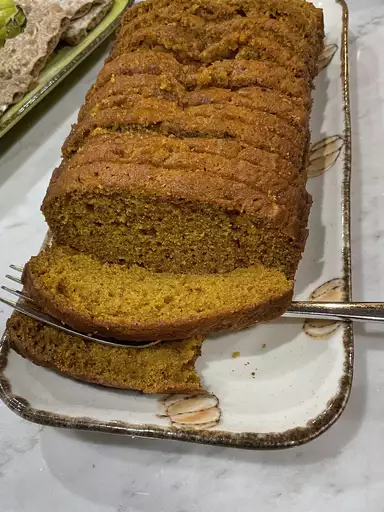

Bread

Descrption
The great news is that pumpkin bread is actually incredibly easy to make — you don't even need an electric mixer
(though, of course it helps). Simply combine your wet ingredients, then combine your dry ingredients, then
combine them all together. Pour into two loaf pans.
The best part about this recipe is that it makes two loaves, so you can have one for now and one for later — or
one for gifting!
Ingredients
- 1(15 ounce) can pumpkin puree
- 4 eggs
- 1 cup vegetable oil
- 2/3 cup water
- 3 cups white sugar
- 3 ½ cups all-purpose flour
- 2 teaspoons baking soda
- 1 ½ teaspoons salt
- 1 teaspoon ground cinnamon
- 1 teaspoon ground nutmeg
- ½ teaspoon ground cloves
- ¼ teaspoon ground ginger
Steps
-
Preheat oven to 350 degrees F (175 degrees C). Grease and flour two 9x5 inch loaf pans.
-
In a large bowl, whisk together the flour, baking soda, salt, cinnamon, nutmeg, cloves and ginger.
-
In a separate bowl, mix together pumpkin puree, eggs, oil, water and sugar until well blended.
-
Stir the dry ingredients into the pumpkin mixture until just blended.
-
Pour into prepared pans
-
Bake for about 50 minutes in the preheated oven. Loaves are done when toothpick inserted in center comes out clean.
-
Enjoy!!!